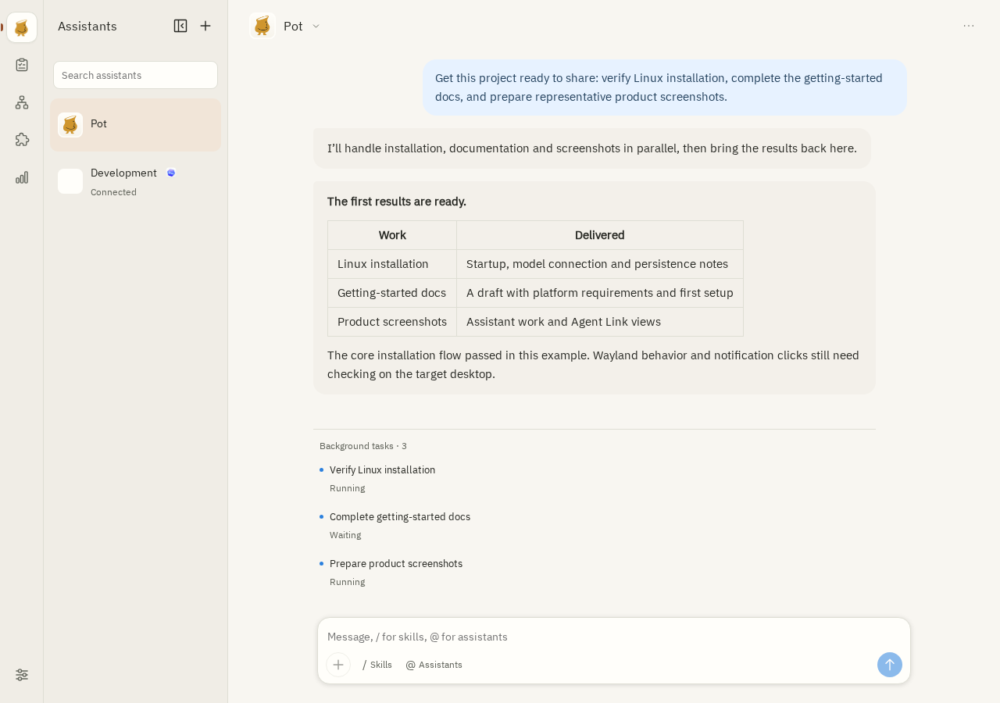

01
Agree on the goal, then hand work to tasks
Use the conversation to discuss needs and tradeoffs. Background tasks handle time-consuming work, returning results and files to the original conversation for review, revisions and next steps.

- Agree on scope
- Decide what the documentation, installation checks and screenshots each need to cover.
- Follow the tasks
- Each task keeps its identity, state and elapsed time, making running and waiting work visible.
- Review what comes back
- When files return to the conversation, request revisions or resolve the questions that still need a decision.